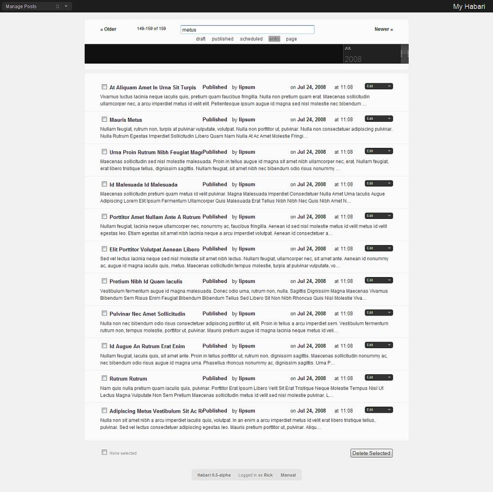
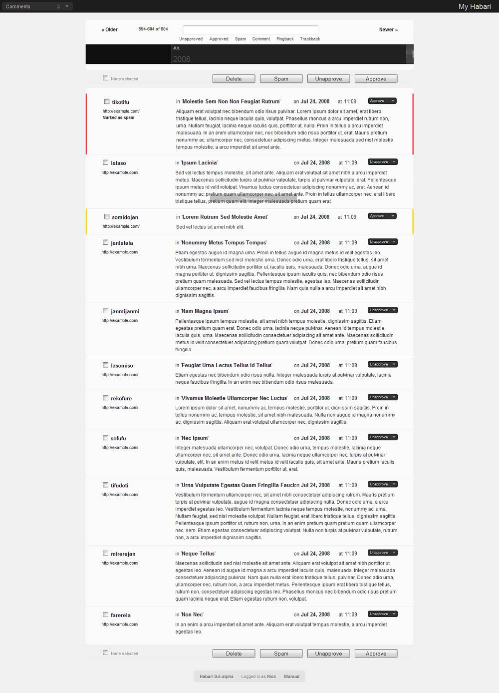
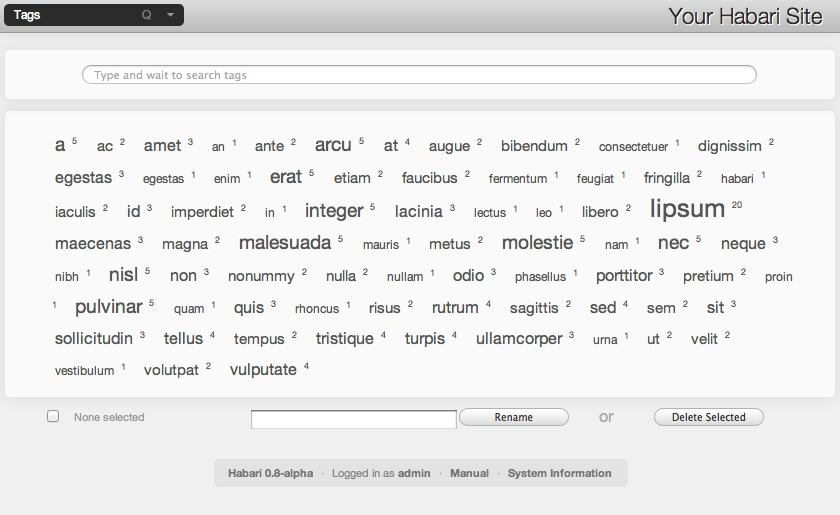
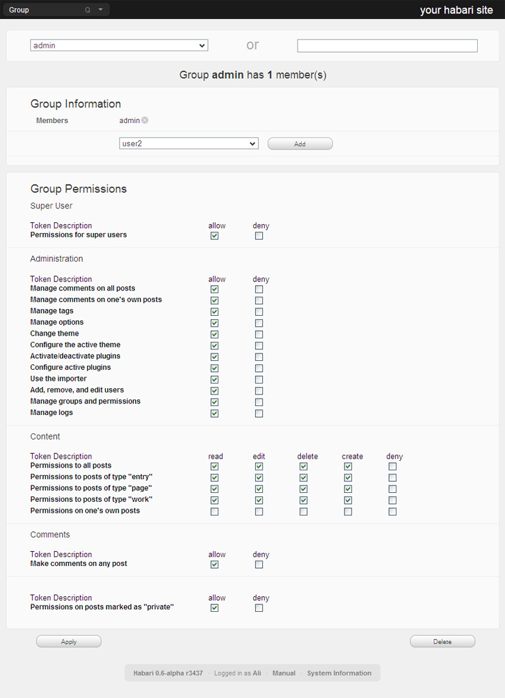

The Dashboard is the first page you see after you log in to Habari's administrative interface. The dashboard can be reached from any page of Habari's administrative interface by choosing Dashboard from the main menu, or by typing Q followed by D.
The dashboard provides a summary of useful information for your site. The top section contains a couple of sentences telling you how long your site has been active, a series of high level statistics about your site, how many drafts you have awaiting completion, how many scheduled posts you have, and how many comments you have awaiting moderation.
Next is a series of modules. Modules are small sub-blocks that focus on specific details about your site. Habari comes with modules that contain lists of your recent published posts, recent comments on your blog, and recent activity that has been logged. Plugins can add various other modules dedicated to specific purposes. A plugin that redirects your feeds through the Feedburner service, for example, may use a module to let you know how many subscribers you have, while a plugin that tracks links to your site may use a module to show you the recent links.
Modules can be moved and rearranged, added, and hidden, so they stay in the positions that is most logical to you and show you the information you want to see. If you don't care about recent log activity, click the x in the upper left corner of the log module to hide it. If the first thing you want to see is any recent comments on your site, move the recent comments module to the top left of the modules section by clicking on the grey rectangle in the upper right of the module and dragging the module .
After all the visible modules, the dashboard has a dropdown list of all the modules that are available to show. To show a module you don't currently have displayed, choose the module then click the button with a + on it to the right of the list to display the module.
To manage your content -- draft or published, entry or page -- select one of the Manage links from the main menu. Habari creates a main Manage menu item, which has a submenu listing each type of content in your system, providing a convenient way to access a specific type of content. The destination for each of these menu links is, in fact, the same page: the menus merely provide a shortcut to filter the display by the specified content type.
Habari strives to make it as easy as possible to find and manage your content. The first thing to note when visiting the "Manage Content" page is the timeline.
Beneath the timeline are the posts returned by the current filters. Beside the timeline are the filter controls, and additional navigation controls. By default, 20 posts will be presented beneath the timeline in reverse chronological order (newest first). If you have more than 20 items that satisfy the filters, you can page forward and backward to see the next or previous set of 20 posts using the "Older" and "Newer" links at the top left and right, respectively. To the right of the "Older" link is a report of the number of posts that match the current filter, and where your current display falls within that set.
Above the timeline on the Manage Content page is the search box. You can use this box to type in search terms to find content. To find all posts that include the word "Habari", simply type "Habari" into the search box and wait a moment. The list of posts below will be updated, and the quantity indicator to the left of the filter box will be updated. Beside the search box are several links that provide shortcut filter controls. To see only entries, click the "Entry" link: this will add type:entry into the search box, restricting the list of posts to only those of type Entry. Click the "Entry" link again to remove that filter from the list. Using these buttons, you can quickly drill down to see all your content. Click the "Entry" link and the "Draft" link to see all your unpublished entries. Click the "Entry" link again to see all draft posts, regardless of content type.
Additional filters are available for manual entry. To see all posts authored by Scott, type "author:scott" into the search box. There is no shortcut link for these other filters because it's possible that a single site might have, for example, a sufficiently large number of authors as to make the links dominate the screen.
You can combine the filter links with manual search words. To see all drafts about pizza, click the "Draft" button, and then type in "pizza". Or, manually type in "status:draft pizza".
The loupe will update for the current set of filtered posts. The combination of filter controls and timeline provide for extremely flexible content navigation.
Beneath the timeline is the list of posts that match the current filters. The post title, status, author, and date are displayed above a brief snippet of the post. This snippet should provide a bit of context about the post if you can't remember it from the title. The title of the post is a hyperlink, allowing you to click it to view that post on the publish page. The status, author, and date are also hyperlinks that show you similar items (same status, same author, or same publication date). To the right of the post is a "drop button". This is a special control mechanism that acts like both a button and a drop-down list. If you place your mouse over the drop button it will expand to reveal all of the options available to you. The first item -- the one displayed before you placed your mouse over the drop button -- is the default action that will occur if you click your mouse. You may select one of the other items from the list, though, if you don't want to take the default action. When managing content, the usual values of the drop buttons will be "Delete" and "Edit".
To the left of each post is a checkbox. You can tick the boxes to mark one or more posts, allowing you to delete a group of posts. The number of posts marked will be indicated above and below the list of posts. The posts you select will be remembered, allowing you to page through all the posts that match the current filter. The number shown will remind you that you have posts selected that might not be displayed on the current page. Next to the number of selected posts (which says "None selected" if you've not yet selected any) is another checkbox. If you tick this box, all posts on the current page will be selected. Once you do so, another link will appear which allows you to select all posts which match the current filter, even those not visible.
Once you have some group of posts selected, you can delete the entire group at once by clicking the Delete Selected button to the right.
To manage your comments select the Comments link from the main menu, or type Q, then C.
As with posts, the first thing to note when visiting the Comments page is the timeline and the loupe at the top of the page. The timeline works with comments the same way as it does with posts.
Beneath the timeline are the comments returned by the current filters. Above the timeline are the search and filter controls, and additional navigation controls. By default, 20 comments will be presented beneath the timeline in reverse chronological order (newest first). If you have more than 20 items that satisfy the filters, you can page forward and backward to see the next or previous set of comments using the "Older" and "Newer" links at the top left and right, respectively. To the right of the "Older" link is a report of the number of comments that match the current filter, and where your current display falls within that set.
In the top center of the Comments page is the search box. You can use this box to type in search terms to find comments. To find all comments that include the word Habari, simply type Habari into the search box and wait a moment. The list of comments will be updated, and the quantity indicator to the left of the search box will be updated. Beside the search box are several links that provide shortcut filter controls to the different statuses and types a comment may have. To see only Approved comments, click the Approved link: this will add status:Approved to the search box, restricting the list of comments to only those which are approved. Click the Approved link again to remove that filter from the list. Using these, you can quickly drill down to see all your comments. Click the Unapproved link and the Pingback link to see all your unapproved pingbacks. Click the Unapproved link again to remove the Unapproved filter and see all pingbacks, regardless of status.
You can combine the filter links with manual filter controls and search words. To see all approved comments containing the word terrific, click the Approved link, and then type in terrific. Or, manually type in status:Approved terrific.
The timeline will update for the current set of filtered posts. The combination of filter controls, timeline and loupe provide for extremely flexible content navigation.
Beneath the timeline are the comments that match the current filters, with a set of buttons and a checkbox located above and below the comments. Each comment shows the commenter's name, url, and email address ( if they left them ), the title of the post the comment was made on, the time and date of the comment, and the text of the comment. The commenter's url serves as direct link to the commenter's site, the email address serves as a link to send them an email, and the post title serves as a link to the comment and the post on which it was made.
To the right of each comment is a drop button, as seen with on the Manage Posts pages. The default action for comments on the drop button is Unapprove - to unapprove the comment. You may select one of the other items from the list, though, if you don't want to take the default action. These other actions are Spam - to mark the comment as spam, Approve - to approve the comment, Delete - to delete a comment completely, and Edit - to take you to a new page where you can modify a comment.
To the left of the comment is a checkbox. You can tick the boxes to mark one or more comments, allowing you to execute actions against groups of comments. The number of comments marked will be indicated above and below the list of comments. The comments you select will be remembered, allowing you to page through all the comments that match the current filter. The number will remind you that you have comments selected that might not be displayed on the current page. Next to the number of selected comments (which says "None selected" if you've not yet selected any) is another checkbox. If you tick this box, all comments on the current page will be selected. Once you do so, another link will appear which allows you to select all comments which match the current filter, even those not visible.
Once you have some group of comments selected, you can execute a single action against them. Just click the button at the top or bottom of the page for the action you wish to perform. As with the drop button, your choices are to Delete the comment, mark the comments as Spam, Unapprove previously approved comments, and Approve unapproved comments.
To manage your site's tags, select Tags from the main menu, or type Q, then A.
At the very top of the tags page is a search box. After your site has been in use for a period of time, you can have quite a few tags. Use the search box to narrow the number of tags which you are viewing.
Below the search box you will see the tags which you have used on your site. These will be of various heights, as a visual cue to how frequently they have been used, and each one will have a superscript number to the right of it denoting the exact number of posts on which it has been used.
Select tags by clicking on them. A second click on a tag de-selects it.
To rename a tag, click on it, type the new name in the text box below the tags, then click the Rename button.
To merge multiple tags into one tag, click on each tag you want to merge together, type the name you want to give the tags in the text box below the tags, then click the Rename button.
To delete one or more tags, click on each tag you want to delete, then click the Delete Selected button beneath the tags.
Options for your site include such things as the site title, tagline, number of posts per page, time zone, etc.
To edit your site's options, either select Options from the main menu, or type Q, then O.
Options are searchable by using the search form at the top right of the page.
To change your theme select Themes from the main menu, or type Q, then T. This will take you to the Themes page.
The Themes page is divided into two sections. The top section contains one item, the current active theme. The bottom section contains all the themes that are available for you to use.
The current active theme section is split into one, two or three sections, depending on the features offered by the theme. The top section contains the name of the theme, its version, developer, a screenshot and a brief description. This section will occur for all themes. If the theme has configuration options, the theme's configuration section will occur next. If a theme has support for blocks, the blocks drag-and-drop configuration section will occur next. The Charcoal theme is an example of a theme which includes all three sections.
The bottom section of the Themes page lists all the themes with each theme showing its name, version and developer above a screenshot of what the theme looks like in use. Below this is a dropbutton that allows you to Preview or Activate a theme. Previewing a theme will temporarily switch just your view of your site to use the theme you are previewing. Other users will not see this preview. The preview will end when you end the preview manually by clicking End Preview or when your session times out. You can configure a theme whilst it is being previewed too.
Activating a theme automatically deactivates the theme that is currently active, and activates the theme you selected.
Areas are places in a theme's templates that are designated to render block content. Blocks are a way for plugins to provide content that can be mapped to specific output locations in the theme by the user without writing code.
If the active theme has support for Areas, you will see a section where you can configure areas for your theme once the theme has been activated.
You can add blocks to your theme by selecting the appropriate New Block Type, giving it a
You can drag-and-drop blocks to re-arrange them and delete them from the areas, but remember to Save after making your changes to ensure the changes take effect.
To delete a block, remove it from the areas on the right and then Delete it from the section on the left.
To manage your plugins, select Plugins from the main menu, or type Q, then P. You will be taken to your Plugins page.
The plugins page is divided into two main sections. At the top of the page is a list of the plugins you have activated. The bottom of the page contains a list of the plugins you have installed, but have not yet activated. Even if you have not added any plugins yourself, this section will contain the plugins that come with Habari.
To the right of each plugin is a dropdown button containing the actions that it is possible for you to perform with the plugin. For inactive plugins, the only possible action is Activate, which you may do by clicking on the dropdown button. Once you do so, the plugin is removed from the list of inactivate plugins and transferred to the list of active plugins.
Active plugins can have several actions associated with them. The most common are Configure, which opens an inline form in which you can set the configuration options for that plugin, and Deactivate, which removes the plugin from the list of active plugins and returns it to the list of inactive plugins. If there is no configuration possible for a plugin, the only action you will be able to perform with it is to deactivate it. Depending on what it does, plugins may add other options to the drop-button.
Each plugin that needs to be configured will have different options, but they all work the same general way. There will be a series of fields to fill in, then a Save and a Close button. After setting the plugin options to your satisfaction, click the Save button to save the changes to the database. Click the Close button to close the configuration dialog.
Some active plugins will have a question mark (?) to the right of their name. Clicking on the question mark will open an inline frame containing usage instructions for that plugin.
Habari supports multiple users, each of which can be assigned to groups with different permissions within the system. Some users can have phenomenal cosmic powers (over the blog, that is) while some users can be restricted to simply writing new posts depending on their groups.
Users can be members of one or more groups. Groups are assigned permissions. The combined permissions assigned to all the groups to which a user belongs define the things that user is permitted to do within the blog.
When we talk about "what a user can do", what we're really saying is "things that can be done by one of the groups to which this user belongs". It's important to remember that users don't have any permission on their own. Users can only do stuff based on the permissions assigned to the groups to which they blog. But it's awkward to keep saying "This user belongs to a group with permission to do Foo", so for brevity we'll simply say "Users who can do Foo".
Users with the "add, remove, and edit users" permission can, obviously, add, remove, and edit users. A user with this permission can access the Users page from the main menu. Here is presented a list of all the user accounts in the system, and a brief report on their activity within the system. Above the user list is a form to create a new user: simply supply a username, email address, and password.
If there are many users on the system, the display can be filtered by searching for part of a user name.
To the left of each user is a checkbox. This is only used when deleting a user account. Select the user(s) to be deleted, select whether to reassign that user's posts to a different user or to delete the posts from the system, and press the delete button.
Clicking on any user will display that user's details page.
From a user's details page one may specify additional information about a user or they may specify their own information, if they're viewing their own user detail page. Most of the data displayed on this page is purely informational, and not really used by Habari anywhere.
The Apply button is used to save any changes made on the user page. A user can also be deleted directly for their page by using the delete button. Choose whether you want to reassign posts to another users or not before using the delete button on the page.
Note that plugins can modify this page to add new fields.
Users with the "manage groups and permissions" permission can access the Groups page from the main menu. By default, all groups defined within the system are displayed. You may modify a single group's details by selecting it from the drop-down list at the top of the page, by clicking on the group's name in the main list, or by clicking the "Edit" option from the drop-button to the right of that group.
To add a new group, simply supply a group name in the field at the bottom of the page and click the "Add Group" button. Newly created groups will have no permissions, by default.
When editing a group, you are first presented with the list of users that are members of that group. You may add additional members from the drop-down list and then clicking the "Add" button. IMPORTANT: changes to the list of users are not saved to the database until you click the "Apply" button at the bottom of the page!
Beneath the user listing is a list of all of the defined permissions within the system, with controls to enable or disable access to these permissions for the group.
There are two kinds of permissions within Habari: binary and CRUD:
Binary permissions are either/or: a group may either do the thing, or not do the thing. For example, the "add, remove, and edit users" permission is either/or. Either a user can add and edit users, or they cannot.
There's a subtle distinction for binary permissions between "not assigned" and "denied". In either case, the group is not permitted to do the thing defined by the permission. The distinction comes into play when a user belongs to multiple groups. Let's look at a practical example to illustrate the point.
User Scott is assigned to the "Content Managers" group, which has been granted permissions to "Manage comments on all posts", "Manage comments on one's own posts", and "Manage tags". The specific assignment of these permissions allows Scott to manage the content on the blog. The "Content Managers" group is neither granted nor denied the "Change theme" permission. Since the "Change theme" permission is not specifically granted, Scott may not change the site theme.
Scott is next added to the "Site Managers" group, which has been granted permission to "Manage options" and "Change theme". Since Scott is in a group that specifically grants permission for "Change theme", Scott may now change the current theme.
After some time, the blog owner decides that he really likes the current theme, and doesn't want anyone changing it. Rather than go through each of the groups to manually remove any previously granted permission to "Change theme" the site owner makes a new group called "No Theme Changes", and assigns all the users to this group. The only permission setting for this group is to specifically deny access to the "Change theme" permission. The deny permission overrides any specifically granted permission for the same thing. Scott is now a member of the "Site Managers" and "No Theme Changes" groups. The former specifically grants him permission to change the theme, but the latter specifically revokes permission to change the theme. Denied permissions always override granted permissions.
CRUD stands for "Create, Read, Update, Delete" and indicates that there are several related actions for that permission. For example, "Permissions on one's own posts" is CRUD. A user might be permitted to create new posts, but not update or delete posts they had previously created.
As with binary permissions, there is a difference for CRUD permissions between "not assigned" and "denied". A particular permission not assigned to one group may be assigned to another group. A user that was a member of both groups would have the permission, because one of the groups to which they belong was assigned that permission. Any CRUD permissions that are specifically denied to a group will deny that permission to all members of the group, regardless of other group membership that might grant that permission.
Using the cascading nature of groups and permissions, it is possible to create robust group assignments to enforce granular permissions. You can create "Content Managers" who have access to modify the content of the site without changing site settings or managing users. You could then create a "Users Managers" group that only has permission to manage users. As members of the "Content Managers" group gain experience and prove their trustworthiness, you can add their user accounts to the "User Managers" group so that they can begin adding new users, and managing current ones.
Habari creates a set of permissions to enable managing access to its different areas. Plugins can add their own permissions to control access to their added functionality. The default permissions are listed below.
Habari keeps records of most of the interesting things about which it knows. It records each time someone logs in, each time a new item is posted, and the like. By selecting Logs from the main menu (shortcut: Q L), you can review the recent activity on your site.
At the top of the page is the familiar loupe and filter input box, allowing you to control what log messages to display. At the top of each column of data is a drop-down allowing you to filter the logs by specific elements. For example, you can select all the log entries generated by a specific IP address, or all logs generated by a specific user. You can apply multiple filter controls, allowing you to drill down to all authentication messages from a specific IP address and a specific user.
To the left of each log entry is a checkbox, allowing you to select one or more log entries. Selected entries can be manually deleted using the dropbutton at the top of the logs page. This dropbutton also has an option to purge the logs, which will immediately delete all log entries.
It is important to note that these logs are not permanent, and will expire after some time (usually a few weeks).
Habari is able to import post, comment, category/tag, and user data from a growing list of importable platforms. To import content, first activate the corresponding Importer plugin on the plugins page (Q P in the Main Menu) and then follow the steps detailed on the Import page.
Once the import process is complete your old data has been copied and can be managed through Habari, and can be deleted from the other platform if desired.
Important Note: Deactivate any spamchecking plugins or plugins that contact outside sites before beginning to import your data. If active, these will greatly slow down, or even prevent, the successful completion of the import process. In the case of spamchecking plugins, comments may incorrectly be marked as unapproved if a spamchecker plugin is active.
After you have completed the import process, remember to reactivate the plugins you deactivated.
By design, Habari is built with the basic set of capabilities needed by everyone to create and maintain a blog or simple website. It is, however, also designed to be highly extensible through the use of plugins and themes other than those with which it ships.
Your site's theme is its basic look and feel as seen by your visitors. Habari comes with several themes.
You aren't limited to these themes in your choices. There are many more themes listed in Habari's theme repository at Habari's wiki, and in the Habari Distribution Directory.
Habari comes packaged with several plugins. These are intended to serve as examples of best practices in plugin creation for developers, and to provide useful functionality to everyone.
In addition to the plugins that are packaged with Habari, dozens of other plugins have been created to extended the software's functionality. These cover everything from WYSIWYG editors, to contact forms, to plugins to allow you to implement custom URLs for your site. Your can find an extensive list on the wiki plugin page, and even more at the Habari Distribution Directory.